The images below try to show a little of the Hyde Park
Relays.53rd Hyde Park Relays 17/02/01
| The start of the 1st Hyde Park Relay in 1949. Although the quality of the image is poor, it is possible to see there were far fewer people on the starting line then! | 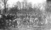 |
| 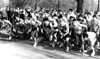 | The start of the 50th Hyde Park Relays men's race, in 1998. |
| The winning men's team in 1998. Leeds University with the fastest man of the day, Mick Hill (top right). | 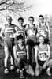 |
| Mick Hill finishing first for Leeds to the applause of the crowd. |
| A changeover from Andy Overend to Martin Barry in the IC 1st team. Note the determined look on Martin's face. |
| 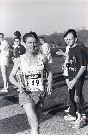 | University of London sprinting for the line. |
| Another changeover. | 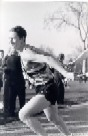 |
| Dave Robinson shown here marking out the course before the start (if we are lucky!). He went on to become team captain.... |
| Paul Mackay (one of the organisers of the 51st HPR) after running the 1st leg for IC. | 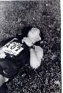 |
| 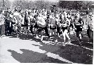 | The start of the 51st Hyde Park Relays women's race, in 1999. |
| The start of the 51st Hyde Park Relays men's race, in 1999. | 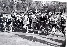 |
| 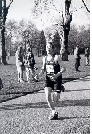 | 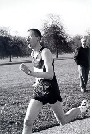 | 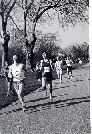 |
| 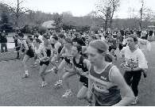 | The start of the 52nd Hyde Park Relays women's race, in 2000. |
| The start of the 52nd Hyde Park Relays men's
race, in 2000. (certainly one of the rougher ones) |
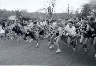 |
| Angus Maclean, the fastest man of the 52nd Hyde Park Relays. |
| 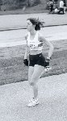 | 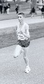 | 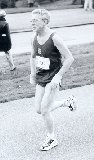 | |
| 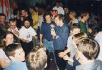 |  |
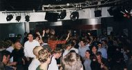 |
| 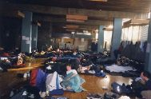 | |